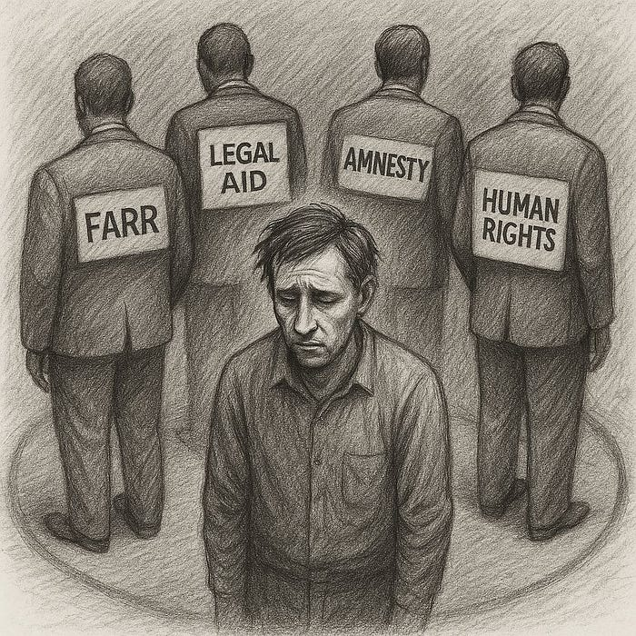

Write
Do Sweden’s Human Rights Institutions Still Work?
Follow
4 min read
·
May 14, 2025
52
1
Observations From Inside the Process
By J.V. Stämpelflykt May 2025
Sweden is known for its strong legal tradition and commitment to human rights. But what happens when individuals — including children — seek protection and answers, only to encounter silence?
This article does not accuse. It documents.
Based on direct correspondence with Sweden’s key oversight and advocacy bodies — including the Parliamentary Ombudsman (JO), the Child Ombudsman (Barnombudsmannen), Civil Rights Defenders, FARR, Amnesty Sweden, and Barnrättsbyrån — this article examines how well the institutional system functions when it is asked to respond to concrete, fact-based reports of harm.
When Children Write and No One Reads
In early May 2025, formal complaints were submitted to the Swedish Ombudsman for Children on behalf of two minors: a newborn infant and a 16-year-old girl. Both described systemic harm — legal documents and financial claims addressed directly to children, retroactive rent demands without contracts, and the denial of basic rights following the involuntary assignment of temporary protection status.
The responses:
The infant received a procedural note saying the Ombudsman does not handle individual cases.
The 16-year-old was advised to contact unrelated external organizations.
Neither response acknowledged the core concern: that the law may be systematically bypassed when applied to vulnerable children. No child rights analysis was offered.
Parliamentary Oversight — Without Oversight
The Swedish Parliamentary Ombudsman (JO) received extensive documentation:
Letters addressed to minors demanding payment of parental debts.
A 67,410 SEK invoice issued after the family lost its sole source of income.
Denials of asylum and support based on a protection status the family never applied for.
Evidence of tax contributions totalling over 648,000 SEK over three years, with no benefits in return.
The final reply from JO? The case was closed without investigation.
Civil Rights Defenders: A Partial Exception
Among all institutions contacted, Civil Rights Defenders (CRD) offered the most thorough response. Their legal team reviewed the material, cited relevant Swedish laws (§13–15 of the LMA), acknowledged the weight of the retroactive rent claim, and noted the complexity of the situation.
However, CRD ultimately declined to offer direct support, citing limited capacity.
Recognition — but no resolution.
Amnesty Sweden: Structurally Absent
In May 2025, Amnesty International Sweden confirmed that it no longer handles individual cases due to internal restructuring. They referred the sender to Asylrättscentrum and the Red Cross — the same institutions other ombudsmen had already redirected to.
No opinion on the documented harm was provided. The case — involving newborns receiving debt letters — remained unaddressed.
Barnrättsbyrån: Child Rights Without Analysis
Barnrättsbyrån, an organization that describes itself as focused on children’s rights, responded without any legal engagement. Their message: contact someone else.
They did not examine whether it is lawful to deny a 16-year-old both asylum consideration and financial support. They did not question the practice of addressing debt notifications to minors. And they did not comment on the psychological toll of long asylum interviews that led to nothing.
No analysis. No position. Just a referral.
FARR — The National Refugee Network
FARR (Flyktinggruppernas Riksråd) — a national network claiming to defend refugee rights — was among the first organizations contacted. The request was specific: assess possible systemic violations, including a retroactive rent invoice issued after income loss, denied benefits, and financial threats sent to children.
The response began with a request for location. Then came a redirection to various volunteer groups across the region. But when pressed for actual legal assistance, FARR explicitly proposed that the family, despite having no income, should consider hiring private lawyers — at their own expense.
This recommendation was made despite FARR having full knowledge of the family’s vulnerable financial status, including the presence of a newborn child and the complete withdrawal of state support.
“We could suggest some lawyers we know are good,” they wrote. “But they are private and must be paid.”
No legal opinion was given. No statement of concern was made. No engagement occurred — even when a documented, systematic, and potentially unlawful targeting of children was presented in full detail.
Instead of defending rights, the network offered a market solution.
A Pattern Emerges
When multiple institutions — both governmental and NGO — receive structured legal submissions and respond not with contradiction but with redirection, a troubling pattern forms.
It is not that the case was dismissed as baseless. It was that no one engaged.
No legal errors were cited. No factual corrections were offered. But no action was taken.
Each body acknowledged — but none assumed responsibility.
What This Tells Us
The experience suggests a larger institutional fatigue or evasion. The system — when faced with a case too complex, too sensitive, or too revealing — refers it away.
In the language of bureaucracy, referral is a soft rejection. And when this happens consistently, it becomes a systemic signal: there is no one to escalate to.
No oversight. No redress. No answer.
This Is Not an Accusation
This article is based solely on documented correspondence. Every claim is backed by PDF evidence, timestamps, official letters, and case numbers. All materials are available upon request.
We do not judge. But we do pose a question — one that demands serious reflection:
Do Sweden’s human rights institutions still function when vulnerable families call upon them?
Or have they — politely, administratively, silently — stopped answering?
📎 All cited documents are available in full for independent review.
🟣 Linked dossiers:
Note: Dossier 2 is the most critical in this series but is still in preparation. The numbering is intentional.
Human Rights
Sweden Working Holiday
Legal Documentation
Ombudsman
Amnesty International
52
1
Written by J.V. Stämpelflykt
·
From field operations and procurement in UN/ICRC to life under protection. I document what remains unspoken — to ensure it won’t remain unseen.
Follow